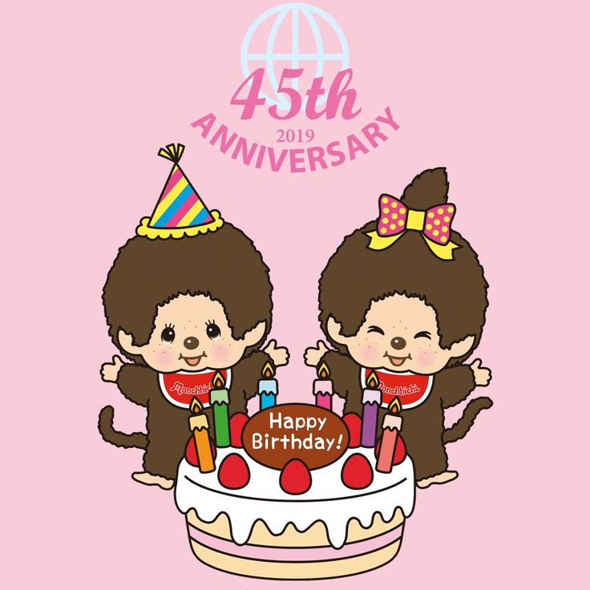

Hola abrime
Hola Mi Amor, Dos Puntos.
Te escribo esta carta para, además de decirte feliz cumpleaños, contarte un poco más, porque como sabes literalmente nunca me callo.
Quería que supieras que en estos 3 meses y medio que estuvimos juntos, aprendí muchísimas cosas sobre cómo manejar una relación, tuve mis equivocaciones, y vos me acompañaste a poder mejorar para ser el novio que yo quiero ser para vos. Y sobretodo, que siempre estés para mi incluso cuando yo o vos estamos muy ocupados significa un montón, de hecho, que ahora mismo estés para mí incluso cuando estás haciendo tu trabajo para la facultad para mí es algo muy preciado.
Últimamente pienso muchísimo en vos, pienso en tu sonrisa, en tus abrazos, tus besos, tu voz, en lo hermosa que sos, y un montón de cosas más sobre vos que me hicieron pensar en por qué para mí es tan especial este día, y es que realmente, te lo digo en serio, sos la persona que más amo en el mundo. Sos la persona con la que quiero estar siempre, siempre quiero levantarme y hablar con vos, ver una serie o peli, buscar cosas para hacer juntos, caminar juntos, tener muchísimas citas, y básicamente compartir todo lo que soy y lo que quiero con vos. Este día es muy especial para mí porque es el día que vos viniste al mundo y, por ende, gracias a eso viniste a mi vida también, suena muy cursi pero estoy muy agradecido.
Agradecido por siempre hablar con vos, porque siempre queres hacer algo juntos, por hacerme reír tanto, por compartir conmigo las cosas que te pasan (tu felicidad, tristeza, dudas). Básicamente, estoy agradecido por quién sos Sofi, sos la persona que más amo porque sos la persona con quien más me siento conectado, siento que me entendés, y que tenés genuino interés en apoyarme en todo lo que quiero hacer, por eso cómo no voy a estar agradecido por este día, y cómo no voy a querer celebrarlo contento.
Sé que para vos este día no significa tanto, y sé que capaz todo esto te parece un poco exagerado, pero es algo que llevo pensando hacer desde hace tiempo, porque es lo que quiero darte por ser lo que sos, por haberme dejado entrar en tu vida, y sobretodo, por siempre elegirme a mí.
Muchas gracias Sofi, feliz cumpleaños y espero que la pases re bien con tus amigos el viernes, estoy muy muy muy orgulloso de vos y de todo lo que podés conseguir, sé que sos la chica más capaz del mundo y espero que sea un año hermoso tanto para vos, como para nosotros.
Te amo
Con todo mi amor, Agustin
